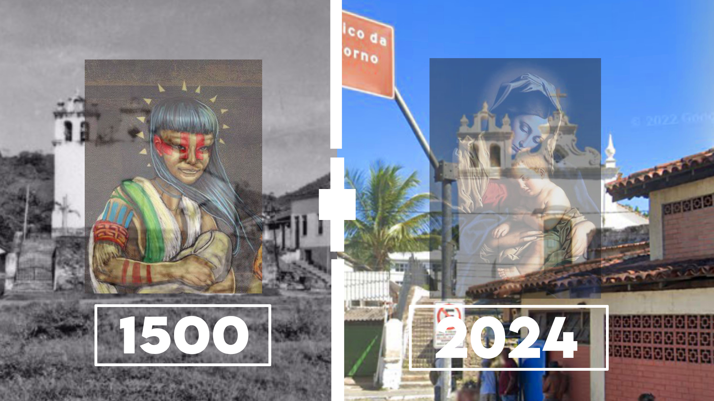

o barato sai caro
Aplicativos Modificados E Seus Riscos 08 mai 2024Saiba os riscos e se vale apena instalar aplicativos no celular de fontes e sites desconhecidos
Como os hackers obtem acesso a sua conta google por aplicativos modificados...

Sem cabo usb e agora?
Transferência De Dados Com FTP 24 abr 2024Como transferir arquivios importantes de um dispositivo para o outro na mesma rede wi-fi...
Esse método é util com arquivos de até 500mg como fotos, vídeos, pdfs etc...

História E Cultura
Angra Dos Reis Colonização E Catolicismo 16 abr 2024 - 5minHistória do descobrimento e colonização de Angra Dos Reis Quem eram seus nativos antes da chegada dos portugueses...
Fontes de estudos oficial do site (IBGE) Instituto Brasileiro de Geografia e Estatística.
Plataforma Cyber Segurança
05 mai 2024 - 1min
Esta é uma única página criada com um conjunto de sites úteis para estudar redes de computadores e cyber segurança.
⚠️ Seu uso indevido é de total responsabilidade do leitor.
Obs: esta em desenvolvimento e recebe atualizções toda semana. Se deseja contribuir com essa pagina entre em contato diretamente no direct vitordev01.

Entre zeros e uns
Porque Escolhi TI 02 abril 2023 - 5minTecnologia Da Informação E Internet Das Coisas
meu primeiro contato com tecnologia...

Boca No Anzol
Phishing - Pescaria De Dados 10 dez 2023Porque muitos estão caindo nesse golpe e como evitar sites falsos e ter seus dados nas mãos erradas...
Engenharia Social + Front-End